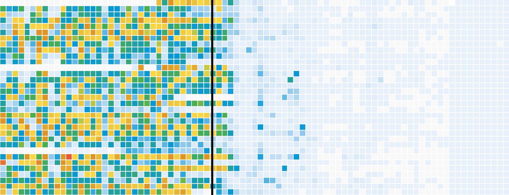

The Impact of Vaccines
Winner of GEN Data Visualisation of the Year 2015. This project documents the impact vaccines had on 7 infectious diseases. We used Excel to aggregate over 100,000 data points. The data was then plotted on heatmaps using Highcharts. All sections were templatized with handlebars.
View project